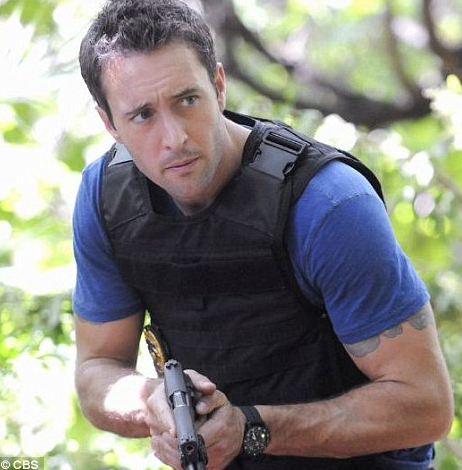
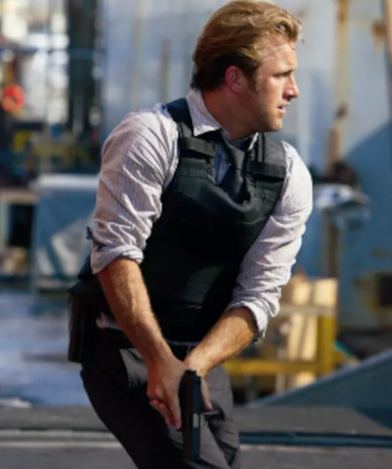
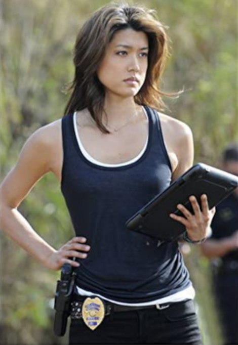
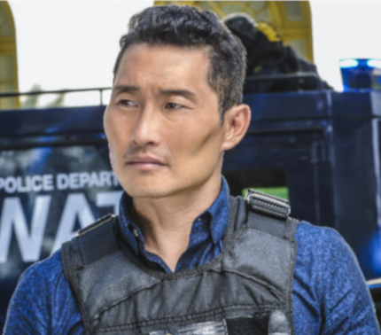
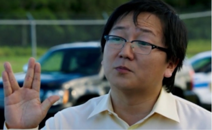

Essa equipe foi formada pela governadora do Hawaii tendo como principal objetivo investigar e resolver crimes graves. O grande diferencial dessa equipe é ter carta branca para atuar e resolver qualquer caso, usando todo o tipo de força necessária, podemos dizer que essa força tarefa não esta suburdinada a qualquer influência externa na Ilha.
Tal poder que a 5-0 possui é resultado do momento em que ela foi criada, naquele ano o Hawaii passava por grandes casos de corrupção nas forças policiais, que motivou o assassinato de várias autoridades da lei que eram honestos e o afastamento de todos aqueles que não se submetiam a um sistema corrupto.
Agora deu pra entender a força e importância da 5-0?? Então sem mais delongas, vamos conhecer alguns dos principais personagens!!
Five-0
Steve McGarrett interpretado por Alex O'Loughlin é o famoso Comandante McGarrett, ex-SEAL, o mais experiente da equipe, além de lider é o responsável por formar a equipe 5-0.
Conheça o Capitão Steve McGarrett

Danny Williams interpretado por Scott Caan Detetive recém chegado no Hawaii, atuava em Nova Jersey, se tornou o braço direito do Comandante McGarrett, sua principal dupla nos trabalhos de campo e seu fiel amigo.
Conheça Danny

Kono Kalakaua interpretada por Grace Park Foi a terceira integrante contratada por Steve, mesmo recém formada na academia de policia, sem muita experiência em campo, ela foi capaz de conquistar a confiança de Steve em uma missão que fizeram juntos.
Conheça Kono

Chin Ho Kelly interpretado por Daniel Dae Kim, antes de fazer parte da 5-0 o policial Chin havia sido demitido da policia, por estar prestes a descobrir todo um esquema de corrupção e suborno envolvendo a policia do Hawaii, com o enorme dom de Steve em identiicar o melhor das pessoas, independente do momento em que estão, contratou Chin Ho Kelly para a 5-0.
Conheça Chin

Neste instante foi formada a primeira equipe de campo da 5-0. Digo primeira porque no decorrer da série alterações vão sendo feitas na equipe, digo também "primeira equipe em campo", pois ainda falta citar dentre tantos personagens, dois que não atuavam diretamente no trabalho de campo, porém contribuiam para a resolução de casos usando o conhecimento que tinham de determinado assunto.
Dr. Max Bergman interpretado por Masi Oka, usando seu conhecimento no laboratório Max por ser médico legista, foi essêncial para dar rumo as investigações.
Conheça o Dr. Max

Kamekona interpretado por Taylor Wily, é um informante da 5-0, devido seu passado e todo o conhecimento e pessosas que conheceu quando ainda era um "fora da lei", passou a usar seu conhecimento a favor da justiça e como informante do 5-0 ajudou a elucidar vários casos.